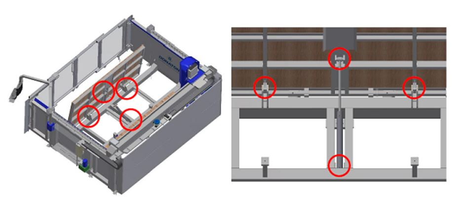
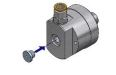
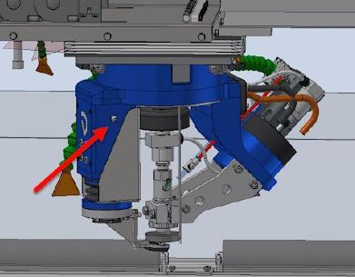
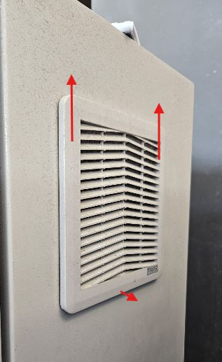
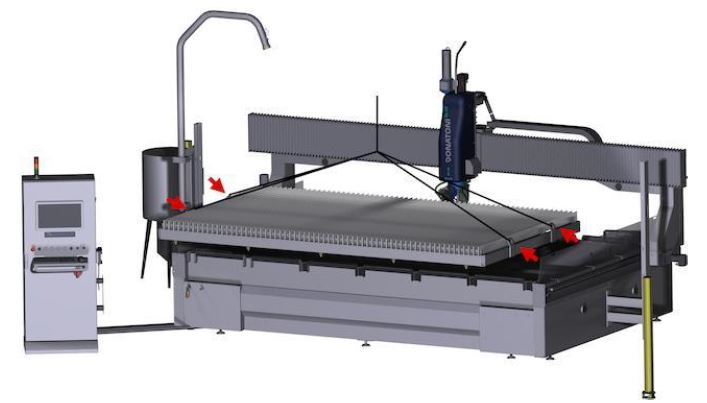
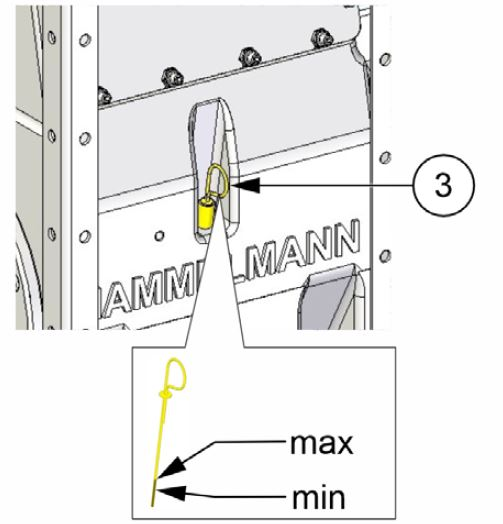
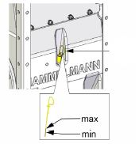
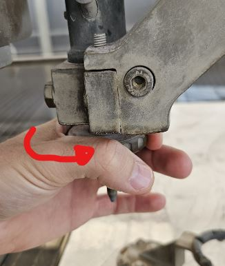

Maintenances
Ce document décrit les procédures de maintenance ordinaire et extraordinaire des machines Donatoni et fournit les indications nécessaires pour effectuer correctement les contrôles, vérifications et interventions programmées.
L’objectif est de préserver l’efficacité et la fiabilité de la machine, de prévenir d’éventuelles anomalies et de réduire le risque d’arrêts imprévus.
- FRAISEUSES STANDARD
- TABLEAU COMPARATIF DES LUBRIFIANTS
- MN0001 TEST DU CIRCUIT DARRÊT DURGENCE
- MN0002 MAINTENANCE MENSUELLE DE LA POMPE À VIDE
- MN0003 TEST DE FONCTIONNEMENT DU SIGNAL LUMINEUX
- MN0004 GRAISSAGE DES GUIDES LINÉAIRES DU SYSTÈME MOVE
- MN0005 GRAISSAGE DU ROULEMENT DE LÉCROU DE LAXE Z
- MN0006 GRAISSAGE DES ROULEMENTS DE LARBRE DE TRANSMISSION DU PONT AXE Y
- MN0007 CONTRÔLE DU LUBRIFIANT DU SYSTÈME DE GRAISSAGE AUTOMATIQUE
- MN0008 GRAISSAGE DES ARTICULATIONS DE LA TABLE BASCULANTE
- MN0009 GRAISSAGE DE LARTICULATION DU BRAS DE CONSOLE
- MN0010 CONTRÔLE DES TUYAUX ET RACCORDS DU CIRCUIT HYDRAULIQUE
- MN0011 VIDANGE DHUILE DE LA CENTRALE HYDRAULIQUE
- MN0012 NETTOYAGE DES FILTRES DE LARMOIRE ÉLECTRIQUE
- MN0013 MAINTENANCE DU GROUPE DENTRÉE DAIR COMPRIMÉ
- MN0014 ROULEMENTS DE LÉLECTROBROCHE
- MN0041 GRAISSAGE DES GUIDES LINÉAIRES DE LA BROCHE LATÉRALE TOOL PLUS
- MN0042 NETTOYAGE DU FILTRE DU CIRCUIT PNEUMATIQUE
- MN0043 CONTRÔLE DE LÉTANCHÉITÉ DU RACCORD TOURNANT
- WATERJET
- MN0044 REMPLACEMENT DE LORIFICE
- MN0045 GRAISSAGE MANUEL
- MN0039 NETTOYAGE DES FILTRES DES OUVERTURES DE VENTILATION DE LARMOIRE ÉLECTRIQUE
- MN0015 CONTRÔLE DES TUYAUX ET RACCORDS DU CIRCUIT HAUTE PRESSION
- MN0030 CONTRÔLE DU LUBRIFIANT DU SYSTÈME DE GRAISSAGE AUTOMATIQUE
- MN0016 CONTRÔLE DE LÉTAT DE PROPRETÉ DE LA CUVE ET VIDANGE
- MN0035 CONTRÔLER LA QUALITÉ DE LEAU
- MN0040 MAINTENANCE DU GROUPE DENTRÉE DAIR COMPRIMÉ
- POMPE BFT
- POMPE DONATONI HYDROX
- MN0046 Contrôle etou remplacement des filtres à eau de la pompe Hydrox
- MN0048 Contrôles divers sur la pompe Hydrox
- MN0049 Remplacement de lhuile de la pompe Hydrox
- MN0050 Remplacement de lhuile de la pompe Hydrox
- MN0051 Maintenance du corps de la pompe haute pression
- MN0052 Remplacement des courroies de transmission de la pompe Hydrox
- POMPE HYPERTHERM
- GROUPE OBTURATEUR POUR HAUTE PRESSION
- MN0029 RÉPARER LA VANNE DE PURGE
- MN0017 RÉPARER LES CLAPETS ANTI-RETOUR ET LES OBTURATEURS POUR BASSE PRESSION
- MN0018 RÉPARER LE CYLINDRE HAUTE PRESSION
- MN0019 REMPLACER LA CARTOUCHE DE LÉLÉMENT DÉTANCHÉITÉ HAUTE PRESSION
- MN0021 REMPLACER LOBTURATEUR POUR BASSE PRESSION
- MN0022 INVERSER LE CYLINDRE HAUTE PRESSION
- MN0023 REMPLACER LE CYLINDRE HAUTE PRESSION
- MN0024 REMPLACER LENSEMBLE CLAPET ANTI-RETOUR
- MN0025 REMPLACER LENSEMBLE LOGEMENT DE LÉLÉMENT DÉTANCHÉITÉ
- MN0026 REMPLACER LADAPTATEUR DE SORTIE
- MN0028 RÉPARATION DE LA SECTION HYDRAULIQUE CENTRALE
- MN0034 REMPLACER LE FILTRE À EAU
- MN0031 REMPLACER LE CORPS DE LA VANNE DE PURGE
- MN0032 NETTOYER LE REFROIDISSEUR À AIR
- MN0036 REMPLACER LÉLÉMENT DU FILTRE HYDRAULIQUE
- MN0037 REMPLACER LE FLUIDE HYDRAULIQUE
- MN0038 LUBRIFIER LES ROULEMENTS DU MOTEUR PRINCIPAL
- MN0020 REMPLACER LENSEMBLE OBTURATEUR HAUTE PRESSION
- MN0047 REMPLACEMENT DU TUBE DE FOCALISATION
- MN0053 REMPLACEMENT DU TUYAU DABRASIF
- CONSIGNES DE SÉCURITÉ
Liste des opérations de maintenance standard pour une fraiseuse de type JET625


Avant de procéder, lire attentivement les | |
Intervalle200 heures de travail | Complexité de l’opérationLow01 / 05 |
Personnel autoriséOpérateur machine | EPI prévus:  |
Vidéo
Procédure
Machine sous tension et configurée pour fonctionner en mode d’accès à la zone dangereuse, appuyer sur le bouton d’arrêt d’urgence et vérifier :
Que l’état « URGENCE ACTIVE » s’affiche sur le moniteur du panneau de commande
Que le secteur rouge du signal lumineux situé sur le panneau de commande s’allume.
Qu’aucun mouvement ne se produise à l’intérieur de la machine lorsqu’un axe quelconque est commandé au moyen des leviers à action maintenue présentes sur le panneau de commande.
Rétablir le fonctionnement de la machine et vérifier :
Que l’indication « URGENCE ACTIVE » disparaisse du moniteur du panneau de commande.
Que le secteur rouge du signal lumineux situé sur le panneau de commande s’éteigne.
Que le mouvement correspondant se produise à l’intérieur de la machine lorsqu’un axe quelconque est commandé au moyen des leviers à action maintenue présentes sur le panneau de commande
Avant de procéder, lire attentivement les | |
Intervallechaque semaine ; chaque mois | Complexité de l’opérationLow01 / 05 |
Personnel autoriséOpérateur machine | EPI prévus:
|
Vidéo
Procédure
Le maintien en bon état de la pompe à vide dépend du niveau de propreté de l’eau du circuit hydraulique. Il appartient à l’acheteur de s’assurer que les caractéristiques de l’eau utilisée sont conformes aux prescriptions du manuel d’utilisation et de maintenance du fabricant de la pompe.
Chaque semaine :
Vérifier que le niveau d’eau dans la cuve atteint le niveau du tuyau d’évacuation de « trop-plein »
En cas d’utilisation occasionnelle du système de vide, actionner chaque semaine la pompe à vide au moyen de la commande d’activation du vide (se reporter à la section B du manuel « Instructions d’utilisation » associé au présent manuel)
Chaque mois :
Effectuer un nettoyage approfondi de la cuve en éliminant les éventuels dépôts de sédiments accumulés au fond
Pour des indications plus détaillées concernant la maintenance de la pompe à vide, se reporter au manuel d’utilisation et de maintenance
120113044828_Manuale_Vuoto_Italiano.pdf
Avant de procéder, lire attentivement les | |
Intervalle— | Complexité de l’opérationLow01 / 05 |
Personnel autoriséOpérateur machine | EPI prévus:  |
Images

Procédure
Test de la section orange du signal lumineux :
Configurer la machine pour fonctionner en mode d’accès à la zone dangereuse, comme décrit au chapitre - MODE D’ACCÈS À LA ZONE DANGEREUSE, et vérifier que le secteur orange du signal lumineux s’allume en mode clignotant.
Configurer la machine pour fonctionner en « mode lent » (se reporter à la section B du manuel « Instructions d’utilisation » associé au présent manuel) et vérifier que le secteur orange du signal lumineux s’allume en mode fixe.
Test de la section verte du signal lumineux :
Configurer la machine pour fonctionner en mode travail, comme décrit au chapitre - MODE TRAVAIL, effectuer un mouvement quelconque d’un des axes de la machine au moyen des leviers à action maintenue présentes sur le panneau de commande (se reporter à la section B du manuel « Instructions d’utilisation » associé au présent manuel) et vérifier que le secteur vert du signal lumineux clignote pendant le mouvement
Test de la section rouge du signal lumineux :
Appuyer sur le bouton d’arrêt d’urgence situé sur le panneau de commande et vérifier que le secteur rouge du signal lumineux s’allume en mode clignotant.
REMARQUE : pour rétablir le fonctionnement de la machine, procéder comme décrit dans le manuel
Avant de procéder, lire attentivement les | |
IntervalleToutes les 300 heures de travail | Complexité de l’opérationLow01 / 05 |
Personnel autoriséOpérateur machine | EPI prévus:  |
Vidéo
Images

Procédure
Au moins toutes les 300 heures de travail, graisser à l’aide d’un pistolet approprié les guides linéaires du système MOVE avec 1cm3 de graisse par les graisseurs indiqués sur la figure

Avant de procéder, lire attentivement les | |
Intervalletoutes les 300 heures de travail | Complexité de l’opérationLow01 / 05 |
Personnel autoriséOpérateur machine | EPI prévus:  |
Images

Procédure
Au moins toutes les 300 heures de travail, graisser à l’aide d’un pistolet approprié le roulement de l’écrou de l’axe Z avec 1 cm3 de graisse par le graisseur indiqué sur la figure
Le graisseur se trouve sur le côté droit du fourreau, sous le carter illustré sur la figure, et il est positionné comme indiqué et mis en évidence sur l’image.


Avant de procéder, lire attentivement les | |
Intervalletoutes les 300 heures de travail | Complexité de l’opérationLow01 / 05 |
Personnel autoriséOpérateur machine | EPI prévus:  |
Vidéo
Image

Procédure
Au moins toutes les 300 heures de travail, graisser à l’aide d’un pistolet approprié les roulements de l’arbre de transmission de l’axe Y avec 1 cm3 de graisse par les graisseurs indiqués sur la figure

Avant de procéder, lire attentivement les | |
Intervalletoutes les 300 heures de travail | Complexité de l’opérationLow01 / 05 |
Personnel autoriséOpérateur machine | EPI prévus:  |
Images

Procédure
Le système de graissage automatique est constitué d’une unité automatique qui graisse les éléments raccordés selon la temporisation programmée.

Le réservoir doit être rempli avec la quantité de graisse nécessaire sans dépasser le niveau maximal indiqué.
Au moins toutes les 500 heures de travail, contrôler le niveau de graisse dans le réservoir et, si nécessaire, faire l’appoint en utilisant le type de graisse approprié
N.B. Une alarme à l’écran avertit l’opérateur lorsque le niveau de graisse a atteint le niveau minimal dans le réservoir et qu’un appoint est donc nécessaire.
Manuel spécifique du dispositif
Avant de procéder, lire attentivement les | |
Intervalletous les 6 mois | Complexité de l’opérationLow01 / 05 |
Personnel autoriséOpérateur machine | EPI prévus:  |
Vidéo
Images

Procédure
Au moins tous les 6 mois, graisser à l’aide d’un pistolet approprié les articulations de la table basculante avec 1cm3 de graisse par les graisseurs indiqués sur la figure.

Avant de procéder, lire attentivement les | |
Intervalle— | Complexité de l’opérationLow01 / 05 |
Personnel autoriséOpérateur machine | EPI prévus:  |
Avant de procéder, lire attentivement les | |
Intervallechaque année = 8760 h | Complexité de l’opérationLow01 / 05 |
Personnel autoriséOpérateur machine | EPI prévus:  |
Avant de procéder, lire attentivement les | |
Intervalletoutes les 2000 heures de travail | Complexité de l’opérationLow01 / 05 |
Personnel autoriséOpérateur machine | EPI prévus:  |
Vidéo
Procédure
La vidange d’huile doit normalement être effectuée au moins toutes les 2000 heures de travail ; le remplacement doit s’accompagner d’un nettoyage approfondi du réservoir.
La vidange s’effectue par le bouchon inférieur (pos B sur la figure) et le remplissage du réservoir doit être effectué à travers un filtre de 10 microns par le bouchon de remplissage (pos A sur la figure)

Avant de procéder, lire attentivement les | |
Intervalletoutes les 2000 heures de travail | Complexité de l’opérationLow01 / 05 |
Personnel autoriséOpérateur machine | EPI prévus:  |
Procédure
Opérations
Tourner l’interrupteur A sur la position OFF |  |
Ouvrir les portes D et E |  |
Retirer la protection F et le filtre G |  |
Nettoyer le filtre à l’aide d’un jet d’air comprimé H |  |
Rétablir l’ensemble en effectuant la procédure inverse |
Avant de procéder, lire attentivement les | |
Intervalle— | Complexité de l’opérationLow01 / 05 |
Personnel autoriséOpérateur machine | EPI prévus:  |
Avant de procéder, lire attentivement les | |
Intervalletoutes les 1550 heures de travail | Complexité de l’opérationLow01 / 05 |
Personnel autoriséOpérateur machine | EPI prévus:  |
Avant de procéder, lire attentivement les | |
Intervalletoutes les 300 heures de travail | Complexité de l’opérationLow01 / 05 |
Personnel autoriséOpérateur machine | EPI prévus:  |
Vidéo
Procédure
Au moins toutes les 300 heures de travail, graisser à l’aide d’un pistolet approprié les guides linéaires du système MOVE avec 1cm3 de graisse par les graisseurs indiqués sur la figure

Avant de procéder, lire attentivement les | |
Intervalletoutes les 2000 heures de travail | Complexité de l’opérationLow01 / 05 |
Personnel autoriséOpérateur machine | EPI prévus:  |
Vidéo
Consignes de sécurité spécifiques à la maintenance
Pour nettoyer le filtre, avant toute intervention, dépressuriser le circuit en agissant sur la vanne d’arrêt du groupe d’air et la verrouiller avec un cadenas.
(Voir le manuel du fabricant
Procédure
Pour les instructions relatives à la maintenance du groupe d’entrée d’air comprimé, se reporter au manuel d’utilisation et de maintenance du fabricant.
Avant d’effectuer des opérations de maintenance, fermer la vanne d’arrêt et la verrouiller avec un cadenas.

Avant de procéder, lire attentivement les | |
Intervalletoutes les 500 heures de travail | Complexité de l’opérationLow01 / 05 |
Personnel autoriséOpérateur machine | EPI prévus:  |
Procédure
Vérifier qu’il n’y a aucun signe extérieur de fuite de liquide de refroidissement. En cas de fuite, procéder au remplacement par la pièce de rechange spécifique.
Remplacement
En cas de remplacement, procéder comme décrit ci-dessous
Dévisser le bouchon |  |
|---|---|
Insérer une clé Allen de 6mm dans le trou central. |  |
Revisser le bouchon arrière. |  |
Espace dédié aux opérations de maintenance accessible depuis la machine pour les machines de type Waterjet.

Avant de procéder, lire attentivement les | |
Intervalletoutes les 70 heures de travail | Complexité de l’opérationLow01 / 05 |
Personnel autoriséOpérateur machine | EPI prévus:  |
Desserrer (SANS LE DÉBRANCHER) le raccord du tuyau haute pression

En maintenant le corps de vanne immobile, dévisser la bague située en dessous

Décrocher et déplacer la vanne

Dévisser le corps de raccordement afin d’accéder au logement de l’orifice


À l’aide d’un petit tube, d’une pince ou d’un autre outil, retirer l’orifice usé

Insérer le nouvel orifice dans son logement en vérifiant son orientation correcte (partie conique vers le haut)

Nettoyer les différents raccords puis appliquer le lubrifiant antigrippant (Blue Goop) avant le serrage

Procéder dans l’ordre inverse pour le remontage en respectant les couples de serrage

Documents joints
Vidéo
Avant de procéder, lire attentivement les | |
Intervalletoutes les 300 heures de travail | Complexité de l’opérationLow01 / 05 |
Personnel autoriséOpérateur machine | EPI prévus:  |
À l’aide d’un pistolet approprié, graisser les différents points indiqués ci-dessous avec 1cm3 de graisse EP1 :
Guides linéaires de la broche latérale TOOL_

Guides linéaires du palpeur de dalle

Passage du réducteur de l’axe A

Tableau comparatif des lubrifiants

Avant de procéder, lire attentivement les | |
Intervalletoutes les 2000 heures de travail | Complexité de l’opérationLow01 / 05 |
Personnel autoriséOpérateur machine | EPI prévus:  |
Arrêter correctement la machine et tourner l’interrupteur sur la position OFF

Retirer le cache en le décrochant par le bas et en le déplaçant vers le haut


Nettoyer le filtre à l’aide d’un pistolet à air

Remonter l’ensemble en suivant la procédure inverse
Avant de procéder, lire attentivement les | |
Intervalletoutes les 1000 heures de travail | Complexité de l’opérationLow01 / 05 |
Personnel autoriséOpérateur machine | EPI prévus:  |
Procédure
Positionner la machine au centre de la cuve. Mettre la pompe en marche et vérifier s’il y a des fuites le long des conduites haute pression.
En cas de fuite, arrêter la pompe, appuyer sur le bouton coup de poing d’urgence et éliminer la fuite en serrant le raccord au couple correct.
35 Nm pour les raccords de 1/4” de pouce
70 Nm pour les raccords de 3/8” de pouce
Désactiver ensuite l’arrêt d’urgence, activer les commandes et essayer de redémarrer la pompe afin de vérifier l’absence d’autres fuites.
Le schéma des tuyaux HP est disponible via le lien ci-dessous.
Avant de procéder, lire attentivement les | |
Intervalletoutes les 450 heures de travail | Complexité de l’opérationLow01 / 05 |
Personnel autoriséOpérateur machine | EPI prévus:  |
Procédure
Le système de graissage automatique est constitué d’une unité automatique qui graisse les éléments raccordés selon la temporisation programmée
Le réservoir doit être rempli avec la quantité de graisse nécessaire sans dépasser le niveau maximal indiqué. Le remplissage doit être effectué par le raccord prévu à cet effet (A sur la figure)

Avant de procéder, lire attentivement les | |
Intervallelié à la consommation d’abrasif | Complexité de l’opérationLow01 / 05 |
Personnel autoriséOpérateur machine | EPI prévus:  |
Procédure
Vérifier que le pont et les autres éléments de la machine n’entrent pas en contact avec les parties à déplacer
Ouvrir le robinet de vidange pour vider la cuve

Soulever le châssis porte-lames à l’aide des supports prévus à cet effet (Poids du châssis = 750Kg)

Retirer les grilles de récupération des pièces
(OPTIONNEL) Soulever les bacs de récupération de l’abrasif et les vider. Procéder ensuite à leur nettoyage et vérifier leur intégrité

Nettoyer soigneusement la cuve en éliminant les résidus d’abrasif
Remettre en place les bacs de récupération de l’abrasif, les grilles et le plan porte-lames
Avant de procéder, lire attentivement les | |
Intervalletoutes les 1000 heures de travail | Complexité de l’opérationLow01 / 05 |
Personnel autoriséOpérateur machine | EPI prévus: |
Avant de procéder, lire attentivement les | |
Intervalletoutes les 400 heures de travail | Complexité de l’opérationLow01 / 05 |
Personnel autoriséOpérateur machine | EPI prévus:  |
Avant de procéder, lire attentivement les | |
Intervalle— | Complexité de l’opérationLow01 / 05 |
Personnel autoriséOpérateur machine | EPI prévus:  |
Avant de procéder, lire attentivement les | |
Intervalle— | Complexité de l’opérationLow01 / 05 |
Personnel autoriséOpérateur machine | EPI prévus:  |
Avant de procéder, lire attentivement les | |
Intervalletoutes les 150 heures de travail | Complexité de l’opérationLow01 / 05 |
Personnel autoriséOpérateur machine | EPI prévus:  |

Position | Description | Degré de filtration |
|---|---|---|
A | Filtre à eau avec cartouche de 9/10" | 5 μm |
B | Filtre à eau avec cartouche de 9/10" | 1 μm |
Contrôle : quand faut-il les remplacer ?
Il est nécessaire de remplacer les cartouches filtrantes lorsque la perte de charge dans le système dépasse 1 bar (lorsque la différence de pression entre le point d’entrée X et le point de sortie Y devient : X-Y > 1 bar)

Procédure de remplacement
Dévisser le boîtier du filtre à l’aide de la clé fournie ;
Retirer la cartouche filtrante usagée ;
Nettoyer le boîtier du filtre (en éliminant les éventuels résidus ou débris) ;
Insérer la nouvelle cartouche filtrante (veiller à installer à chaque position la cartouche ayant le degré de filtration correct) ;
Positionner le boîtier du filtre dans son logement et serrer à l’aide de la clé ;
Avant de procéder, lire attentivement les | |
Intervallemensuel | Complexité de l’opérationLow01 / 05 |
Personnel autoriséOpérateur machine | EPI prévus:  |
Contrôle du niveau d’huile du moteur de la pompe
Retirer la jauge et vérifier le niveau.
Vérifier également qu’il n’y a pas d’eau de coupe dans le lubrifiant « Émulsion »

Contrôle du récipient d’eau sale
Si une quantité excessive de fluide ou d’émulsion est constatée dans le récipient, contacter l’assistance technique Donatoni Service srl afin de recevoir des instructions ou de programmer un contrôle du système d’étanchéité de la pompe à pistons

Interstice de la pompe haute pression (contrôle visuel)
Vérifier que les soufflets ne sont pas endommagés. En cas de dommages, contacter l’assistance
En cas de dommages au soufflet, vérifier également l’éventuelle corrosion sur la tige du
piston.Vérifier si le fluide de service est présent dans l’espace intermédiaire ; dans ce
cas, contacter l’assistance

Avant de procéder, lire attentivement les | |
Intervalle1 an ou 4 ans à partir de la deuxième fois | Complexité de l’opérationMedium03 / 05 |
Personnel autoriséOpérateur machine | EPI prévus:  |
Pour atteindre le bouchon de la vanne de vidange et l’orifice de remplissage, ouvrir le capot de couverture (A) et retirer le carter frontal (C) et latéral (B).
Pour recueillir l’huile, un récipient de collecte approprié d’une capacité supérieure à 5litres est nécessaire.
Placer un chiffon ou un matériau similaire sous le bouchon de vidange d’huile (E).

Retirer le bouchon (D) de l’orifice de remplissage d’huile.
Pour vidanger l’huile, utiliser le flexible muni du raccord à vis fourni. Veiller à ce que l’extrémité ouverte reste à l’intérieur du récipient prévu pour la collecte
Dévisser le bouchon de la vanne de vidange d’huile (E). L’huile commence à s’écouler dès que le raccord vissé du flexible est serré.
Vérifier la présence d’émulsion dans l’huile usagée. Si une émulsion est présente, éliminer l’humidité du circuit d’huile.
Retirer le flexible et revisser le bouchon de la vanne de vidange d’huile (E).
Remplir le carter avec environ 4.3 litres d’huile neuve en vérifiant le niveau à l’aide de la jauge.
Classe de viscosité de l’huile : PAO ISO VG 320.
Un tableau comparatif est présent à la fin du document.
 |  |

Avant de procéder, lire attentivement les | |
Intervalle1 an ou 4 ans à partir de la deuxième fois | Complexité de l’opérationMedium03 / 05 |
Personnel autoriséOpérateur machine | EPI prévus:  |
Voir page
MN0049 Remplacement de l’huile de la pompe Hydrox
Avant de procéder, lire attentivement les | |
Intervalletoutes les 1500 heures de fonctionnement | Complexité de l’opérationCritical05 / 05 |
Personnel autoriséService Donatoni | EPI prévus:  |
Certaines parties de la pompe sont soumises à l’usure ; leur maintenance doit être effectuée par du personnel dûment formé.
Les opérations de maintenance doivent être effectuées sur la tête de pompe et l’ensemble piston/cylindre. Selon le nombre d’heures, différents composants doivent être remplacés.
S’adresser à l’assistance Donatoni pour la maintenance


Avant de procéder, lire attentivement les | |
Intervalletoutes les 6000 heures de fonctionnement | Complexité de l’opérationCritical05 / 05 |
Personnel autoriséService Donatoni | EPI prévus:  |
La tension des courroies doit être effectuée selon des spécifications précises. S’adresser à l’assistance Donatoni pour la maintenance

Avant de procéder, lire attentivement les | |
Intervalle— | Complexité de l’opérationLow01 / 05 |
Personnel autoriséOpérateur machine | EPI prévus:  |
Images
Avant de procéder, lire attentivement les | |
Intervalletoutes les 2000 heures de travail | Complexité de l’opérationLow01 / 05 |
Personnel autoriséOpérateur machine | EPI prévus:  |
Images
Avant de procéder, lire attentivement les | |
Intervalletoutes les 1000 heures de travail | Complexité de l’opérationLow01 / 05 |
Personnel autoriséOpérateur machine | EPI prévus:  |
Images


Avant de procéder, lire attentivement les | |
Intervalletoutes les 500 heures de travail | Complexité de l’opérationLow01 / 05 |
Personnel autoriséOpérateur machine | EPI prévus:
|
Avant de procéder, lire attentivement les | |
Intervalletoutes les 500 heures de travail | Complexité de l’opérationLow01 / 05 |
Personnel autoriséOpérateur machine | EPI prévus:  |
Avant de procéder, lire attentivement les | |
Intervalletoutes les 500 heures de travail | Complexité de l’opérationLow01 / 05 |
Personnel autoriséOpérateur machine | EPI prévus:  |
Avant de procéder, lire attentivement les | |
Intervalletoutes les 1000 heures de travail | Complexité de l’opérationLow01 / 05 |
Personnel autoriséOpérateur machine | EPI prévus:  |
Avant de procéder, lire attentivement les | |
Intervalletoutes les 1500 heures de travail | Complexité de l’opérationLow01 / 05 |
Personnel autoriséOpérateur machine | EPI prévus:  |
Avant de procéder, lire attentivement les | |
Intervalletoutes les 3000 heures de travail | Complexité de l’opérationLow01 / 05 |
Personnel autoriséOpérateur machine | EPI prévus:  |
Avant de procéder, lire attentivement les | |
Intervalletoutes les 3000 heures de travail | Complexité de l’opérationLow01 / 05 |
Personnel autoriséOpérateur machine | EPI prévus:  |
Avant de procéder, lire attentivement les | |
Intervalletoutes les 6000 heures de travail | Complexité de l’opérationLow01 / 05 |
Personnel autoriséOpérateur machine | EPI prévus:  |
Avant de procéder, lire attentivement les | |
Intervalletoutes les 6000 heures de travail | Complexité de l’opérationLow01 / 05 |
Personnel autoriséOpérateur machine | EPI prévus:  |
Avant de procéder, lire attentivement les | |
Intervalletoutes les 12000 heures de travail | Complexité de l’opérationLow01 / 05 |
Personnel autoriséOpérateur machine | EPI prévus:  |
Avant de procéder, lire attentivement les | |
Intervalletoutes les 1000 heures de travail | Complexité de l’opérationLow01 / 05 |
Personnel autoriséOpérateur machine | EPI prévus:  |
Avant de procéder, lire attentivement les | |
Intervalletoutes les 3000 heures de travail | Complexité de l’opérationLow01 / 05 |
Personnel autoriséOpérateur machine | EPI prévus:  |
Avant de procéder, lire attentivement les | |
Intervalletoutes les 1000 heures de travail | Complexité de l’opérationLow01 / 05 |
Personnel autoriséOpérateur machine | EPI prévus:  |
Avant de procéder, lire attentivement les | |
Intervalletoutes les 1500 heures de travail | Complexité de l’opérationLow01 / 05 |
Personnel autoriséOpérateur machine | EPI prévus:  |
Avant de procéder, lire attentivement les | |
Intervalletoutes les 3000 heures de travail | Complexité de l’opérationLow01 / 05 |
Personnel autoriséOpérateur machine | EPI prévus:  |
Avant de procéder, lire attentivement les | |
Intervalletoutes les 3000 heures de travail | Complexité de l’opérationLow01 / 05 |
Personnel autoriséOpérateur machine | EPI prévus:  |
Avant de procéder, lire attentivement les | |
Intervalletoutes les 1000 heures de travail | Complexité de l’opérationLow01 / 05 |
Personnel autoriséOpérateur machine | EPI prévus:  |
Avant de procéder, lire attentivement les | |
Intervalletoutes les 100 heures de travail | Complexité de l’opérationLow01 / 05 |
Personnel autoriséOpérateur machine | EPI prévus:  |
Retirer le palpeur afin de faciliter le démontage

Tourner la bague pour retirer le tube de focalisation.

Remplacer le tube de focalisation par un élément neuf en récupérant l’entretoise

Réassembler et revisser la bague après avoir inséré la nouvelle pièce

Remonter le palpeur de dalle

Effectuer le palpage de la buse afin de régler la valeur correcte « Delta Z »
Vidéo
Avant de procéder, lire attentivement les | |
Intervalletoutes les 1000 heures de travail | Complexité de l’opérationMedium03 / 05 |
Personnel autoriséOpérateur machine | EPI prévus:  |
Tourner l’axe A à 90_ afin de pouvoir accéder ensuite à la fermeture sur la tête
Retirer le carter

Retirer le carter de protection sous la tête
Retirer le serre-tuyau
Extraire le tuyau par le bas en mémorisant son parcours ; le nouveau tuyau devra ensuite être passé en suivant le même parcours
Insérer le nouveau tuyau d’abrasif
Bloquer le tuyau à l’aide de la fixation prévue à cet effet
Refermer les carters en faisant attention aux câbles présents sous la tête
Vidéo
Avant de commencer toute opération d’installation, de configuration ou de maintenance, lire attentivement TOUS les manuels d’instructions, documents et guides fournis avec la machine.
La personne qui exécute l’opération est seule responsable du bon fonctionnement et de la maintenance de la machine.
Donatoni Macchine décline expressément toute responsabilité en cas de blessures (y compris mortelles) ou de dommages causés à l’équipement ou à d’autres biens en raison d’une utilisation ou d’une maintenance incorrecte de la machine, ainsi qu’en cas de non-respect des procédures établies dans le manuel d’instructions de l’équipement ou dans tout autre document et toute autre procédure de sécurité. En cas de problèmes ou de difficultés, il est vivement recommandé de contacter Donatoni Macchine ou votre centre d’assistance de référence.
La sécurité est une priorité. Pour toute question, n’hésitez pas à contacter l’assistance Donatoni aux coordonnées suivantes :
T: _39 045 6862899
WhatsApp: _39 045 7740052
Telegram: @donatonimacchine_bot